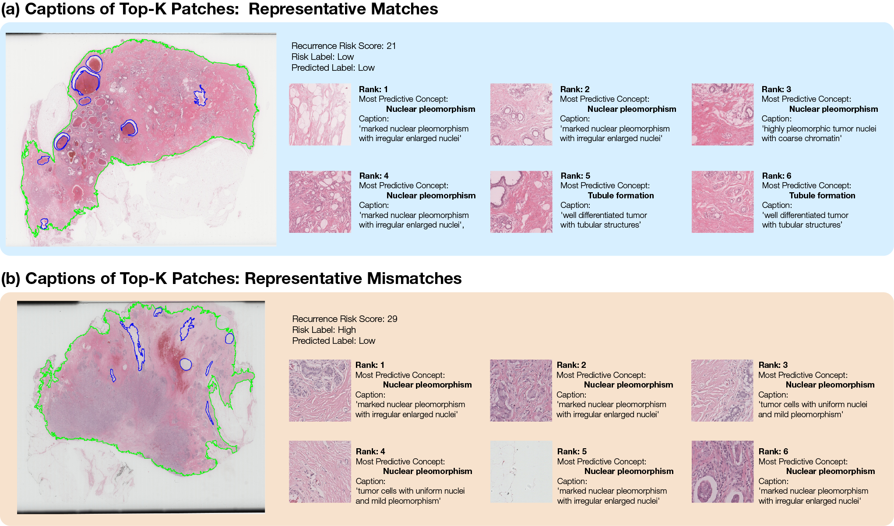

Thumnail. Overall Framework
💡
Summary
| Duration | 2025.12 - 2026.02 |
|---|---|
| Role | Co-First Author |
| Research Area | Computational Pathology |
| Keywords | VLM · MIL · Semantic Alignment · Digital Pathology |
| Status | Reject (MICCAI 2026 Submitted, Reviewed) |
🎯 What problem did I solve?
1. Background
Attention-based Multiple Instance Learning (MIL)은 Whole Slide Image 분석에서 널리 사용되지만, attention이 병리학적으로 의미 있는 영역이 아니라 통계적으로만 예측력이 높은 영역에 집중하는 문제가 있습니다. 이러한 attention의 불안정성은 병원 간 데이터 분포가 달라질 때 일반화 성능 저하로 이어질 수 있습니다.
❓ Research Questions
- Can semantic knowledge guide MIL attention toward clinically meaningful regions?
- Can semantic alignment improve cross-institution generalization?
- Which level of semantic alignment contributes most to robust MIL learning?
🎯 Objective
To develop a backbone-agnostic semantic regularization framework (CASA) that aligns MIL attention with pathology concepts derived from vision-language models while preserving the original MIL architecture.
🧠 How did I solve it?
2. Dataset
- Internal Yonsei Cohort (489 WSIs)
- Institutional External Cohort
- BCR-Net External Cohort
총 3개의 독립 코호트를 활용하여 기관 간 일반화 성능을 평가했습니다.
3. Methods

Concept-guided Semantic Alignment
Vision-Language Model에서 생성한 병리학 개념 임베딩을 활용하여 attention을 직접 regularization하는 프레임워크입니다.
기존 MIL backbone은 변경하지 않고 다음 세 가지 수준에서 semantic alignment를 수행했습니다.
💡
🪄 Method highlights
✔ Backbone-agnostic Framework
✔ Vision-Language Model Integration
✔ Concept-guided Attention Learning
✔ Multi-level Semantic Alignment
✔ Cross-institution Evaluation
✔ Component Ablation Study
Semantic Concept Modeling
To provide clinically meaningful supervision, pathology concepts were defined based on the WHO breast tumor classification and encoded into a shared image–text embedding space using a pretrained Vision-Language Model.
Each image patch was compared with these concept embeddings to estimate its semantic relevance, creating a concept-guided reference for attention learning.
📌 Multi-level Semantic Alignment
CASA introduces semantic constraints at three complementary levels.
- Distribution-level Alignment: Aligns the attention distribution with concept-derived semantic relevance, encouraging the model to focus on pathology-related regions instead of statistically correlated artifacts.
- Feature-level Alignment: Regularizes patch-level feature representations toward concept embeddings within the VLM semantic space, improving semantic consistency across instances.
- Global-level Alignment: Constrains the slide-level representation to preserve overall semantic coherence while maintaining compatibility with different MIL backbones.
Experimental Design
- 6 Attention-based MIL Backbones
- CLAM
- DSMIL
- ABMIL
- TransMIL
- DTFD-MIL
- CLAM-MB
Component Analysis
다음 요소들의 영향을 독립적으로 분석했습니다.
- Warm-up Strategy
- Top-K Selection
- Feature Alignment
- Global Alignment
- Concept Tier Design
📊 What were the results?
- Finding 1: Semantic alignment generally improved robustness under cross-institution evaluation while preserving compatibility with existing MIL architectures.
- Finding 2: Feature-level semantic alignment (Lfeat) consistently contributed the largest performance gains across multiple MIL backbones.
- Finding 3: Global semantic alignment improved in-domain performance but required conservative tuning under severe domain shift.
- Finding 4: Different concept hierarchies exhibited backbone-dependent behavior, suggesting that semantic concept design should be optimized for each application rather than universally applied.

Discussion
- Semantic information from VLMs can serve as an effective inductive bias for attention-based MIL.
- Architecture modification is not necessary to incorporate semantic guidance.
- Multi-level alignment provides a flexible framework applicable to various MIL backbones.
Limitations
- Performance improvements remained modest across several backbones.
- Effectiveness depended on backbone architecture and domain characteristics.
- Concept quality and VLM representation significantly influenced alignment performance.
- Further validation on larger multi-institutional cohorts is required.
👩💻 What was my contribution?
- Research idea formulation
- Literature review on MIL and Vision-Language Models
- CASA framework design
- Semantic concept engineering
- Experimental design
- Component ablation studies
- Cross-institution evaluation
- Manuscript writing
💡 What did I learn?
Technical Insight
모델 성능 향상은 단순히 새로운 아키텍처를 설계하는 것 뿐만 아니라, 의미있는 “귀납적 편향”을 도입하는 것도 중요하다는 것을 체감할 수 있었습니다. VLM의 Semantic 정보를 아키텍처의 수정없이 기존 MIL Framework에 통합하는 방법과, 어떤 구성 요소가 일반화에 실제로 기여하는지 이해하기 위해 신중한 ablation study가 필수적이라는 것 또한 체득할 수 있었습니다.
Developing CASA taught me that improving model performance is not only about designing new architectures but also about introducing meaningful inductive biases. I learned how semantic information from vision-language models can be incorporated into existing MIL frameworks without architectural modifications, and how careful ablation studies are essential for understanding which components truly contribute to generalization.
Research Insight
Confernece에 논문을 제출하고, 심사위원들의 점수와 피드백을 받으면서 “독창성”과 “실증적 근거의 균형”의 중요성을 다시 한 번 깨달았습니다. 제안된 프레임워크는 해석 가능한 의미 정렬 전략을 도입했지만, 다양한 환경에서 일관된 성능 향상을 보여주고, 각 설계 선택의 실질적인 의미를 명확하게 설명하는 것이 새로운 방법을 제안하는 것만큼 중요하다는 것을 알게 되었습니다.
비록 미채택된 프로젝트였으나, 저자와 심사위원 모두의 관점에서 연구를 비판적으로 스스로 평가하는 관점을 체득할 수 있었습니다.
Submitting this work to MICCAI and receiving reviewer feedback reinforced the importance of balancing novelty with empirical evidence. While the proposed framework introduced an interpretable semantic alignment strategy, I realized that demonstrating consistent improvements across diverse settings and clearly articulating the practical significance of each design choice are just as important as proposing a new method. This experience strengthened my ability to critically evaluate research from both the author's and reviewer's perspectives.
Appendix.
- Reviewer Feedback - Overall Score: 2 / 4 / 2
Major Comments
- Limited performance improvement across some backbones
- Need for stronger empirical validation
- Practical impact should be demonstrated more clearly
→ Receiving reviewer feedback helped me recognize the gap between a technically interesting idea and a publication-ready contribution. Rather than viewing the rejection as a failure, I used the reviews to identify weaknesses in experimental validation and the clarity of the paper's narrative. This experience improved both my research design and scientific writing skills, and it continues to shape the next iteration of this work.